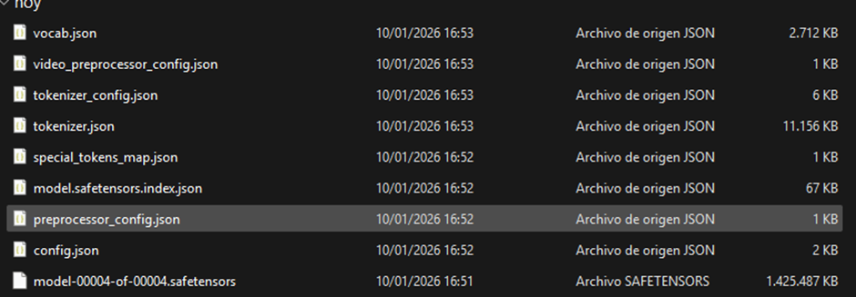

Procedimiento de Cuantización de Modelos
Esta documentación técnica detalla el flujo de trabajo para convertir modelos de Hugging Face a formato GGUF optimizado, utilizando llama.cpp en entornos Windows. Este proceso permite la ejecución local eficiente de LLMs.
Este procedimiento asume un entorno Windows x64. Si dispone de GPU NVIDIA, descargue las versiones con soporte CUDA.
Instalación del Entorno Base (Python)
Python es el requisito fundamental para ejecutar los scripts de conversión inicial.
- Diríjase al sitio oficial python.org/downloads.
- Descargue el instalador ejecutable más reciente.
- Ejecute el instalador.
Configuración Crítica
En la primera pantalla del instalador, DEBE marcar la casilla Add Python to PATH. Si omite este paso, los comandos de consola fallarán.
Obtención de Herramientas de Cuantización
A. Binarios de llama.cpp
No es necesaria la compilación manual. Descargue los binarios precompilados:
- Visite los Releases de llama.cpp en GitHub.
- Descargue la versión compatible (ej.
Windows x64 CUDAsi usa NVIDIA). - Descomprima el contenido en una carpeta de trabajo (ej.
LlamaLab).
B. Script de Conversión
Los binarios no incluyen el script Python necesario. Debe descargarse por separado.
Archivo requerido: convert_hf_to_gguf.py
Guarda este archivo en la misma carpeta que los binarios.
Preparación del Modelo Original
Se requieren los archivos en formato Hugging Face ("raw").
Estructura de directorios recomendada:
/LlamaLab
├── llama-quantize.exe
├── convert_hf_to_gguf.py
└── /ModeloOriginal <-- Cree esta carpeta
├── config.json
├── tokenizer.json
├── model-00001-of-00004.safetensors
└── ... (resto de archivos)
Nota: Descargue todos los archivos .json, .model y .safetensors. Evite duplicados de versiones safetensors si existen variantes.
Vista detallada de archivos descargados:
Instalación de Dependencias
Abra una terminal en su carpeta de trabajo y ejecute los siguientes comandos para preparar el entorno Python.
pip install gguf protobuf numpy torchSi recibe errores como ModuleNotFoundError: No module named 'transformers' o relacionados con MistralTokenizerType:
pip install transformers sentencepieceConversión a Formato Intermedio (FP16)
Este paso consolida los múltiples archivos del modelo (safetensors) en un único archivo GGUF de alta precisión (sin compresión).
python convert_hf_to_gguf.py "ModeloOriginal" --outfile modelo_f16.ggufmodelo_f16.gguf (aprox. 15-16 GB para modelos 8B).
Cuantización (Compresión)
Ejecución del binario C++ para reducir el tamaño del modelo. Utilizaremos el esquema Q4_K_M (4 bits, balanceado), que ofrece una excelente relación calidad/tamaño.
./llama-quantize.exe modelo_f16.gguf resultado_q4km.gguf Q4_K_MEntrada
modelo_f16.gguf
~14.7 GB
Salida Final
resultado_q4km.gguf
~4.5 GB (Reducción drástica)
Implementación en LM Studio
- Abra LM Studio .
- Navegue a la sección "My Models" (icono de carpeta).
- Haga clic en "Show in File Explorer".
- Cree una subcarpeta (ej. "Mis_Modelos_Propios").
- Mueva el archivo
resultado_q4km.ggufa esta nueva carpeta. - Cargue el modelo desde la interfaz de chat superior.
Nota sobre Modelos de Embedding
Si el modelo cuantizado es de tipo Embedding (como el Qwen3-VL-Embedding del ejemplo), no podrá chatear con él. Estos modelos están diseñados exclusivamente para vectorización de texto/imágenes, no para generación de diálogo.